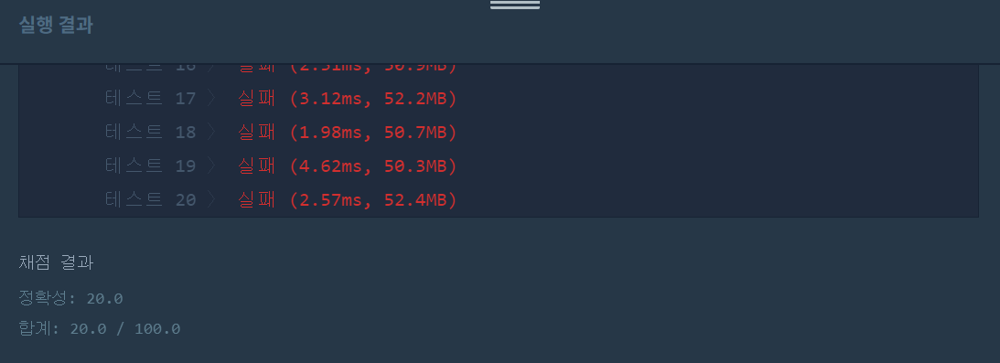
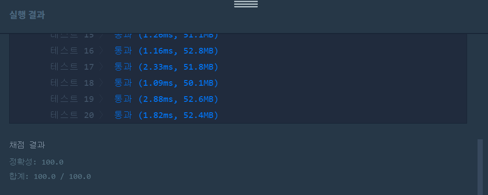

👀 문제
https://programmers.co.kr/learn/courses/30/lessons/42587
👊 첫 번째 도전
1. 설계
- 중요도(priorities)와 위치(location)을 값으로 가지는 Document 클래스를 생성한다.
- Document를 저장하는 ArrayList를 이용하여 조건에 맞게 정렬한다.
- 맨 앞의 값 nowDoc을 기준으로 리스트를 순회하며 중요도가 nowDoc<nextDoc이면 nowDoc을 맨 뒤로 보낸다.
2. 구현
import java.util.ArrayList;
/**
*
* @author HEESOO
*
*/
class Document{
int priority;
int location;
public Document(int p, int l){
this.priority=p;
this.location=l;
}
}
class Solution {
public int solution(int[] priorities, int location) {
int answer = 0;
Document nowDoc;
Document nextDoc;
ArrayList<Document> array=new ArrayList<Document>();
for(int i=0;i<priorities.length;i++){
array.add(new Document(priorities[i],i));
}
for(int i=0;i<array.size();i++){
nowDoc=array.get(0);
for(int j=1;j<array.size();j++){
nextDoc=array.get(j);
if(nowDoc.priority<nextDoc.priority){
array.remove(nowDoc);
array.add(nowDoc);
nowDoc=nextDoc;
}
}
}
for(int i=0;i<array.size();i++){
if(array.get(i).location==location){
answer=i+1;
break;
}
}
return answer;
}
}
3. 결과
 실패.
4. 문제점
nowDoc이 항상 맨 앞을 가리키지는 않는다. nowDoc이 중요도가 제일 크다면 값이 뒤로 밀리지 않기 때문이다. 이와 같은 경우인 아래 테스트케이스를 생각해본다.
| priorities | location | return |
|---|---|---|
| [3,3,4,2] | 3 | 4 |
| [1,2,3,0] | 0 | 3 |
👊 두 번째 도전
1. 설계
- ArrayList에서 제거 및 맨 뒤에 추가가 이루어지지 않는다면 nowDoc은 최댓값이라는 뜻이므로 이 경우 nowDoc은 그 다음 값을 가리키도록 한다.
2. 구현
import java.util.ArrayList;
/**
*
* @author HEESOO
*
*/
class Document{
int priority;
int location;
public Document(int p, int l){
this.priority=p;
this.location=l;
}
}
class Solution {
public int solution(int[] priorities, int location) {
int answer = 0;
Document nowDoc;
Document nextDoc;
ArrayList<Document> array=new ArrayList<Document>();
//Document형태로 ArrayList에 저장
for(int i=0;i<priorities.length;i++){
array.add(new Document(priorities[i],i));
}
for(int i=0;i<array.size();i++){//단순히 array.size()만큼이 아니라 마지막까지 도달해야함
nowDoc=array.get(i);
for(int j=i+1;j<array.size();j++){
nextDoc=array.get(j);
if(nowDoc.priority<nextDoc.priority){//nowDoc이 최대값이 아니므로 맨 뒤로 밀려남
array.remove(nowDoc);
array.add(nowDoc);
i--;//값이 삭제된 위치에서부터 다시 순회하기 위함
break;
}
}
}
for(int i=0;i<array.size();i++){
if(array.get(i).location==location){
answer=i+1;//리스트는 0번부터 시작하지만 리턴값은 1부터 시작하기때문
break;
}
}
return answer;
}
}
- Document nowDoc: ArrayList의 첫 번째 값(또는 그 다음 값)을 나타낸다. 앞에 최댓값이 있을 경우 다음으로 넘어간다.
- Document nextDoc: nowDoc 뒤의 값들이다.
- ArrayList
array: 중요도와 순서의 값을 가지는 Document클래스를 생성하여 ArrayList에 저장한다. 중간에서 값을 삭제하고 맨 뒤에 추가할 경우가 있으므로 이가 쉬운 ArrayList를 사용한다.
3. 결과
 🤟 성공 🤟
👏 해결 완료!
예전에 코딩테스트에서 나왔을 때는 못 풀었는데, 이번엔 해결해서 다행이다. 문제 유형이 스택과 큐이지만 ArrayList를 활용하였다.